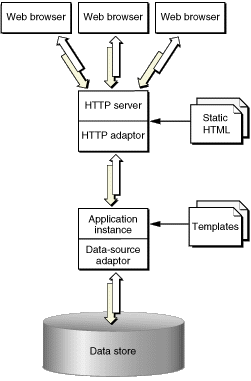
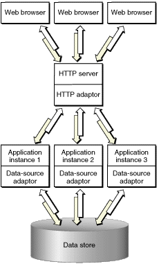
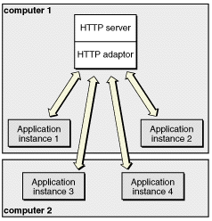

| PATH |

A WebObjects deployment has six major parts:
For JDBC connectivity, your database needs a JDBC driver, which you obtain from your database vendor. WebObjects applications can connect to databases that use Type 2 (partly Java) or Type 4 (all Java) JDBC drivers. The JDBC adaptor included with WebObjects Deployment has been certified to work adequately with Type 4 drivers. Type 2 drivers may require special configuration for them to work properly with the adaptor. If your database provides a Type 2 driver, consult with your database vendor to determine how it needs to be configured to work properly with a JDBC adaptor.
When an application user sends a request through a Web browser to your HTTP server, the server forwards the request to the HTTP adaptor. The adaptor then determines which application instance should process the request and forwards the request to it. When the application instance receives the request, it performs all the necessary processing to produce a response (a new Web page). The instance then sends the response page to the adaptor, which forwards it to the HTTP server. The HTTP server then forwards the response page to the user's Web browser. This process is illustrated in Figure 2-1.
Figure 2-1 WebObjects deployment model
Notice that both the application instance and the HTTP server contribute to the response page's content. The instance uses templates and logic to generate the HTML code for dynamic pages, while the HTTP server provides the content of images contained in those pages. The server can also dispense static pages.
The number of instances of your application necessary to support its users depends on the number of users that connect to your application concurrently. In some cases a single instance is adequate. When one instance is not able to process requests in a timely manner, additional instances can solve the problem. This way, the amount of user-state information that a single instance stores is reduced. In addition, with less state to keep track of, an instance can process requests faster. Figure 2-2 shows a site with one host running multiple instances of an application.
Figure 2-2 WebObjects deployment model—multiple instances of an application
However, adding instances of your application to a host may not be the most effective solution. Eventually a point of diminishing returns will be reached, where adding instances actually decreases your application's performance. In such a case, you should consider adding additional application hosts that run the extra instances required to handle the increased traffic to your site. Figure 2-3 shows how a site with two computers, one acting as an HTTP server and application host, and the other just as an application host would look.
Figure 2-3 Deployment using two computers
